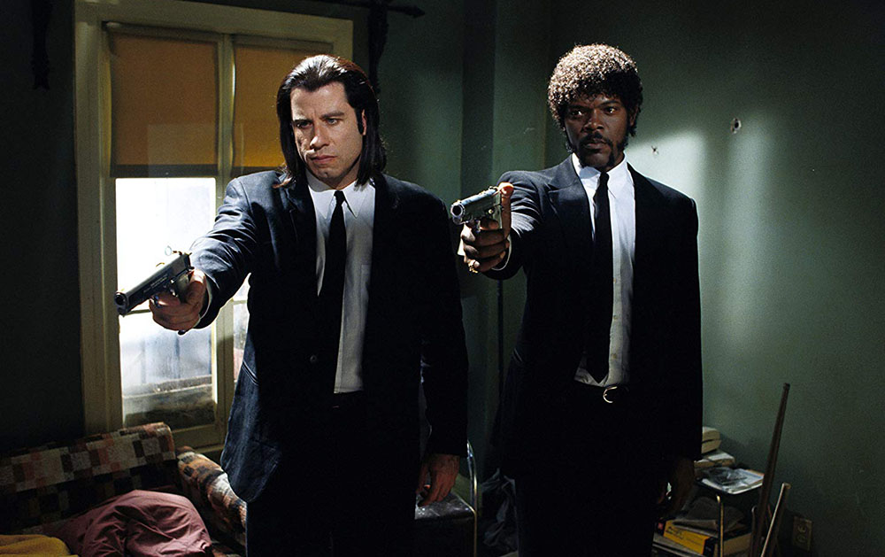
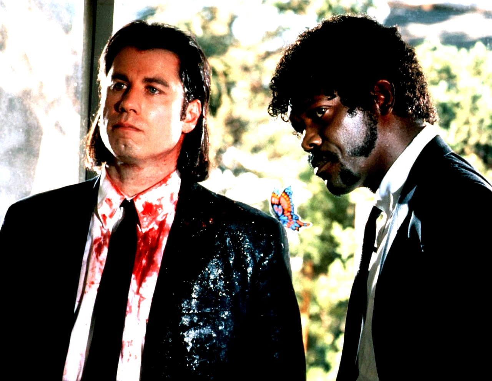
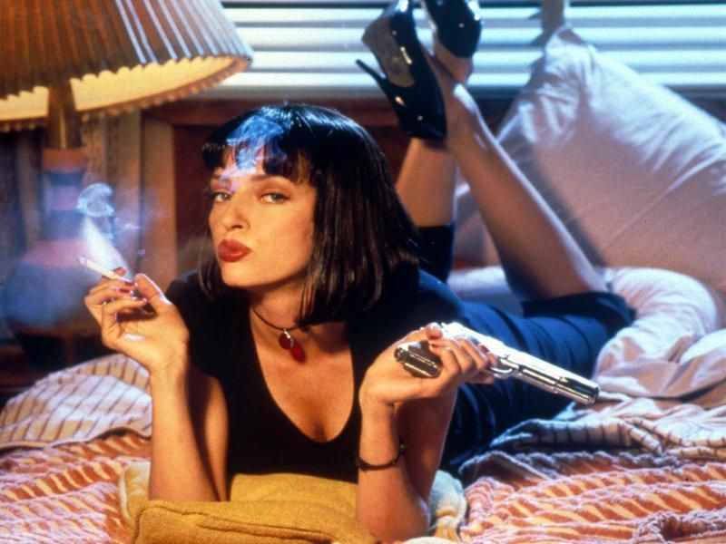

Криминальное чтиво
«Криминальное чтиво» (англ. Pulp Fiction «Бульварное чтиво») — кинофильм режиссёра Квентина Тарантино. Сюжет фильма нелинеен, как и почти во всех остальных работах Тарантино. Этот приём стал чрезвычайно популярен, породив множество подражаний во второй половине 1990-х. В фильме рассказывается несколько историй, в которых показаны ограбления, философские дискуссии двух гангстеров, спасение девушки от передозировки героина и боксёр, которого задели за живое. Название является отсылкой к популярным в середине XX века в США pulp-журналам. Именно в стиле таких журналов были оформлены афиши, а позднее саундтрек, видеокассеты и DVD с фильмом. Фильм постоянно находится в первой десятке списка 250 лучших фильмов на сайте IMDb. Обладатель премии «Оскар», «BAFTA» и «Золотой глобус» в категории «Лучший оригинальный сценарий», «Золотой пальмовой ветви» Каннского кинофестиваля 1994 года и ещё более сорока кинематографических наград. Картина также имела большой успех у публики и считается важной вехой в истории кинематографа, давшей ощутимый толчок развитию независимого американского кино. В 2013 году внесён в Национальный реестр фильмов Соединённых Штатов Америки как имеющий культурное, историческое и эстетическое значение.
Вслед за предыдущим фильмом Тарантино «Бешеные псы», части сюжета «Криминального чтива» были разделены, перемешаны и показаны в «неправильном» порядке; техника, до этого использовавшаяся режиссёрами французской «Новой волны», в частности Жан-Люком Годаром и Франсуа Трюффо, а также Стэнли Кубриком в «Убийстве». Всего в сценарии можно насчитать шесть частей, при этом авторские названия имеют три из них: «Винсент Вега и жена Марселласа Уоллеса» (Vincent Vega and Marsellus Wallace’s Wife), «Золотые часы» (The Gold Watch) и «Ситуация с Бонни» (The Bonnie Situation).
Премьера фильма «Криминальное чтиво» состоялась в мае 1994 года на Каннском кинофестивале. Фильм был показан на полуночном показе фильма и стал сенсацией. Он выиграл Золотую пальмовую ветвь, главный приз фестиваля, породив новую волну рекламы. Первый обзор фильма в США был опубликован 23 мая в отраслевом журнале Variety. Тодд Маккарти назвал «Криминальное чтиво» «захватывающим зрелищем поп-культуры … потрясающим, огромным успехом». После первого показа фильма Тарантино постоянно находился в пути, продвигая свою картину. В течение следующих нескольких месяцев он участвовал в кинофестивалях по всей Европе. 14 октября 1994 года «Криминальное чтиво» вышло в свет в США. Как описывает Питер Бискинд: «Он не был платформенным, то есть не открывался в нескольких кинотеатрах и медленно разворачивался, как традиционный инди-фильм; он сразу же получил широкое распространение в 1100 кинотеатрах». «Криминальное чтиво» стало самым кассовым фильмом в прокате в первые выходные, вытеснив фильм Сильвестра Сталлоне «Специалист», который был на второй неделе и показывался в кинотеатрах в два раза больше. При своем бюджете в 8,5 млн долларов и маркетинговых расходах около 10 млн «Криминальное чтиво» заработало 107,93 млн долларов в кассах США, что сделало его первым инди-фильмом, который превысил 100 млн долларов. Во всем мире сборы составили 213 миллионов долларов. Как говорит MovieMaker: «Фильм был не чем иным, как национальным культурным феноменом». В Великобритании не только фильм стал большим хитом, но и книга по сценарию стала самой успешной в истории издательства Великобритании и входит в десятку лучших бестселлеров[23].
Сюжет о передозировке Мии и её оживлении с помощью укола адреналина в сердце — дословное воспроизведение истории, рассказанной в документальном фильме «American Boy: A Profile of Steven Prince» (англ.) (1978), режиссёром которого был Мартин Скорсезе. Миа называет Винсента ковбоем, в ответ Винсент называет Мию девушкой-ковбоем. Примечательно то, что Джон Траволта сыграл до этого в фильме «Городской ковбой» (1980), а Ума Турман — в «Даже девушки-ковбои иногда грустят» (1993). Харви Кейтель играл роль подобного «Чистильщика» в фильме «Возврата нет» (1993). Танец Винсента и Мии отсылает к подобной сцене в одном из любимых фильмов Тарантино — «Банда аутсайдеров». Энджела Джоунс играла в фильме «Curdled» («Запёкшаяся кровь»), исполнительным продюсером и одним из сценаристов которого был Квентин Тарантино. Её героиня также из Колумбии и интересуется убийствами. Книжка, которую читает Винсент Вега — Modesty Blaise (англ.) Питера О’Доннелла. Тарантино является поклонником этой книжной серии и планировал сначала снять полнометражный фильм, а затем продюсировать съёмки сериала, но был выпущен только один эпизод в виде фильма «Приключения Модести Блэйз».